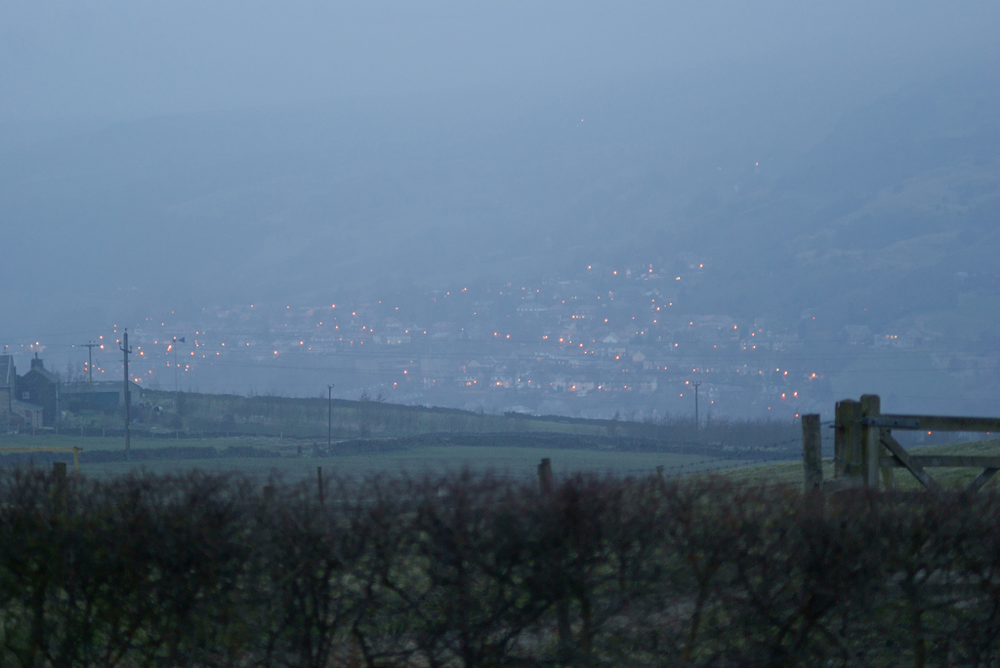

New
Upload your own trail to the site
Map
Systemwide trail map
Trails
All available trails
My Profile
Bookmarks, Completed and Uploaded Trails
Home
Back to home page
Logout
Add New
Map
Trails
Profile
Sign out
Calderdale Way
55.7 Miles
Ave Rating: 8.6
Ranking (4)
12 Hikers
21 Hikers
Add more photos by clicking on, or dragging to, the area below